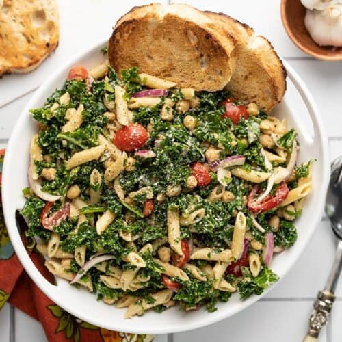

Kale Pasta Salad

Super tasty OMG
A delicious fun light summer pasta to enjoy with friends and family Yum Yum YUM
Ingredients:
- 1/3 cup olive oil
- 3 Tbsp balsamic vinegar
- 2 Tbsp mayonnaise
- 1/2 Tbsp Dijon mustard
- 1 clove garlic, minced
- 1/2 tsp fried basil
- 1/4 tsp salt
- 1/4 tsp pepper
- 8 oz. penne
- 8 oz. chopped kale
- 1 pint grape tomatoes
- 1/2 red onion
- 1 15 oz. can chickpeas
- 1/2 cup grated Parmesan
Steps:
- Make the vinaigrette first. Whisk together the olive oil, balsamic vinegar, mayonnaise, Dijon, minced garlic, basil, salt, and pepper in a bowl until smooth and creamy. Set the dressing aside.
- Bring a pot of water to a boil for the pasta. Once boiling, add the pasta and boil until tender (7-8 minutes). Drain the pasta in a colander and allow it to cool.
- Add the kale to a large bowl. Drizzle ⅓ of the prepared balsamic dressing over the kale and then use your hands to massage the dressing into the kale. Massage the kale for 3-5 minutes, or until it has wilted to half its volume.
- Slice the grape tomatoes in half, thinly slice the red onion, and rinse and drain the chickpeas.
- Add the drained and cooled pasta to the bowl with the kale, along with the tomatoes, onions, chickpeas, and Parmesan.
- Pour the rest of the dressing over top, then stir the salad until everything is evenly combined and coated in dressing. Add salt and pepper to taste, then serve.